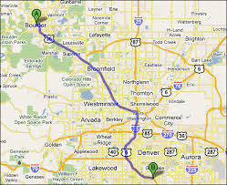

This is a Mock-Up draft of the Info Page for any Hikes/Bikes/Camping Sites accessible from the Home Page
Occoneechee Mountain Loop Trail

This is the info panel
Difficulty: Moderate
Distance: 20 Minutes from Downtown
Time to Complete: 2 hours
Zip: 27278
Address: Orange Grove Road at Virginia Cates Road
This will be a Twitter feed of hashtags pertaining to this hike
Back to Home Page